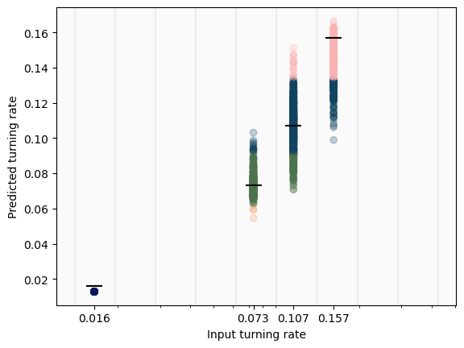

0. Table of Contents
- Introduction
- Refining CNN Architecture
- Degrees of Freedom Discussion
- Density Discussion in Big Tumbling Rate Spread
- Gaps in Lower Tumbling Rates for Higher Densities
- Gaps in Higher Tumbling Rates for Higher Densities
- Omitting Highest Tumbling Rate
- Different Density Comparison (Omitting Highest Tumbling Rate)
- Multiple Nearby Densities
- Epoch Numbers
- Monochrome Interpolation (Low Tumbling Rates)
- Monochrome Interpolation (High Tumbling Rates)
- Monochrome Extrapolation
1. Introduction
The main purpose of this week is to further explore gaps in tumbling rates for our CNN predictions, alongside discussions of densities and clusters. The auxiliary purpose of this week is to flesh out the discussion around degrees of freedom.
2. Refining CNN Architecture
The intermediary convolutional layer in MN_3 was running a (4,4) kernel size; this is uncentered, and therefore slightly hinders the model. We have swapped it out for a (5,5) kernel size.
We could do ‘contour plots’ of individual clusters to map out how their orientation
3. Degrees of Freedom Discussion
We have identified three different changes we could make to the system images before experimenting with the CNN that could pose interesting results.
Orientation case
Monochrome case
Confusion case: This case consists of a random scrambling orientations. The orientation case keeps its orientation categories, but we alter the image such that these categories do not mean anything. Our expectations are that:
- Training on Confusion case will yield the same result whether validated on Confusion or Orientation case.
- Training on Orientation case will yield better results when validated on Orientation case, rather than when validated on Confusion case. We expect this because the Orientation case training should prime the model to detect an intrinsic feature of the system, which is then completely scrambled by the Confusion case. If our hypothesis is incorrect, and validating on Orientation in fact yields similar results, it would mean that the Orientation case does not pick up on this degree of freedom in its analysis.
- The Orientation case should overall produce better results than the Confusion case, unless our hypothesis in the last bullet point is false.
Misinformation case: This case consists of misattributing a random percentage of particle orientations in an Orientation case image. This has physical parallels to misidentifying the orientation of active matter particles from a two-dimensional perception (as they are three-dimensional swimmers).
Noise case: This case consists of giving a random (float) noise distribution in a Monochrome case image. The reasoning behind this is granting the CNN the ability to distinguish
4. Density Discussion in Big Tumbling Rate Spread
A natural question that arises out of the density analysis done in Week 17 is why the prediction distributions get skewed by the upper probability values. That is to say, why does adding bigger tumbling rates significantly decrease the prediction accuracy and precision?
Our current theory is that higher tumbling rates do not exhibit the clustering behaviour which the CNN is tracking in order to assert its predictions. Once the tumbling rate reaches a certain amount for our \(\rho=0.15\) case, it is more difficult for the CNN to draw comparisons, due to the feature landscape dramatically changing. This essentially causes the CNN to misrecognise these different (clustering and non-clustering) ranges of data, across both cases having too small a training sample size to effectively predict the probabilities.
The natural fix for such a problem is more data, but there is some other analysis that can be done to further explore the situation. As stated above, we have so far been working on a density of \(\rho=0.15\). Provided our theory is correct, we might notice changes to predictions by increasing the density, thus allowing for clustering at higher tumbling rates.
Below is an example of how the landscape looks for \(\rho=0.25\). This is a randomly selected image from the pool of utilised probabilities, so its tumbling rate is unknown; nonetheless this image gives a visual idea of the amount of particles on the screen.

And below is a side by side comparison of the last screenshots of an evolution using \(P_{tumble}=0.34\), for \(\rho=0.35\) (left), \(\rho=0.25\) (center) and \(\rho=0.15\) (right). We can see that in the center case the density is hitgh enough for clusters to begin forming (though only barely), whereas the left case already has more noticeable clusters.

reverb3164: \(\rho=0.25\), \(P_{tumble} \in \\{0.016,0.023,0.034,0.050,0.073,0.107,0.157,0.231,0.340,0.500 \\}\), 30 epochs
We can also visually compare reverb3164 (the \(\rho=0.25\) case) with stage4124 (the analogous \(\rho=0.15\) case):
Given that the scales are the same, we can qualitatively notice a decrease in spread (i.e. an increase in accuracy) while jumping from a smaller density to a larger density. This is reflected in our quantitative results:
| MAE |
0.017795 |
0.000895 |
| Avg STD |
0.011430472 |
0.019767912 |
| Max STD |
0.030022161 |
0.04721327 |
| Overlap Ratio |
0.7 |
1.0 |
We can see that the standard deviations are lower for a bigger density, both on average and regarding maxima. We have, however, included two parameters which are in fact worse in the higher density case: the overlap ratio and the mean absolute error. Regarding the overlap ratio, this is directly tied to the lowering of spread: if we look to the lower density case, we can see that the lower values which are ‘hit’ there (and which are bareky missed in the higher density case) do not hit so with the centre of their distribution, but rather only with the spread perifery. There is also the issue of the accuracy we’ve been employing so far for our overlap ratio: 1e-3 is simply too small to account for distributions which do not have a big spread, but are nonetheless within the vicinity of the guessed distribution. We later decided to increase the accuracy to 5e-3; there is an argument to be made that it should be increased even further; in reality the contents of these probability distributions matter much more: are they Gaussian? We will see once we introduce violin plots and absolute deviation considerations that this is indeed the case. Furthermore, how does the mean of the distribution relate to the expected value? Within how many standard deviations are they from each other? This will also start to be factored in in the analysis below.
5. Gaps in Lower Tumbling Rates for Higher Densities
We begin by mirroring the cases we explored with \(\rho = 0.15\). The thought is that we can show the prior results (again, see Week 17) are somewhat general by doing so, while also exploring how allowing more clusters to be picked up on across the tumbling rate distributions slightly improves our data.
salad8110: \(\rho = 0.25\), \(P_{tumble} \in \\{0.016,0.023,0.034,0.050,0.073,0.107 \\}\), 30 epochs
We can now see the prediction distributions that the CNN makes, and get confirmation that they are broadly Gaussian in form. This suggests that a mean analysis of our predictions would accurately reflect the predicttion dynamics at play. Note that the violin plots show specifically the absolute difference between the expected and predicted values, and so values are better the closer they are to zero. We can also see what was previously intuited from the original distribution graphs: the spread does get larger with increased tumbling rates.
We can also see exactly how precise the predictions of the CNN are regarding the lowest value. Rather than a Gaussian, the \(P_{tumble}=0.016\) case appears at our scope to be a constant distribution (it is, in actuality, still a Gaussian distribution with an extremely narrow standard deviatiom; the CNN prediction naturally never hits the exact same real number twice).
Beyond that, we can see that the above parameters are still very good. We can once again visually and quantitatively compare with the \(\rho = 0.15\) case:
| MAE |
0.004446 |
0.006792 |
| Avg STD |
0.0035765618 |
0.00386919 |
| Max STD |
0.0058416952 |
0.006857624 |
| Overlap Ratio |
1.0 |
1.0 |
And see that once again, the higher density case yields better results over all. Note, of course, that we are discussing differences of magnitude \(10^{-3}\) (for MAE and Max STD) and \(10^{-4}\) (for Avg STD).
crab8432: \(\rho = 0.25, P_{tumble} \in \\{0.016,0.034,0.050,0.107 \\}\), 30 epochs
| MAE |
0.003553 |
0.004174 |
| Avg STD |
0.0037065577 |
0.0038618112 |
| Max STD |
0.005531624 |
0.006754256 |
| Overlap Ratio |
1.0 |
1.0 |
(Note: the overlap ratio for goose4421 was adapted to the new criterion of accuracy 5e-3)
summer6911 \(\rho = 0.25\), \(P_{tumble} \in \\{0.016, 0.073, 0.107, 0.157 \\}\)
 |
 |
| MAE |
0.008955 |
0.008299 |
| Avg STD |
0.0066630687 |
0.007414392 |
| Max STD |
0.013605628 |
0.013894851 |
| Overlap Ratio |
1.0 |
0.75 |
(Note: the overlap ratio just barely misses book1634 in the \(P_{tumble}=0.016\) case even with the 5e-3 extension)
6. Gaps in Higher Tumbling Rates for Higher Densities
salmon9100: \(\rho = 0.25\), \(P_{tumble} \in \\{0.073,0.107,0.157,0.231,0.34,0.5 \\}\), 30 epochs
Prediction means and standard deviations.
Actual value 0.073: Average = 0.07637 +- 0.00064; Expected value within 5.309 stdevs of mean
Actual value 0.107: Average = 0.11958 +- 0.01252; Expected value within 1.005 stdevs of mean
Actual value 0.157: Average = 0.16357 +- 0.00663; Expected value within 0.990 stdevs of mean
Actual value 0.231: Average = 0.24277 +- 0.02668; Expected value within 0.441 stdevs of mean
Actual value 0.34: Average = 0.34620 +- 0.03178; Expected value within 0.195 stdevs of mean
Actual value 0.5: Average = 0.44783 +- 0.03338; Expected value within 1.563 stdevs of mean
tread4399: \(\rho=0.25\), \(P_{tumble} \in \\{0.073,0.157,0.5 \\}\), 30 epochs
Prediction means and standard deviations.
Actual value 0.073: Average = 0.08449 +- 0.00540; Expected value within 2.128 stdevs of mean
Actual value 0.157: Average = 0.15972 +- 0.00279; Expected value within 0.973 stdevs of mean
Actual value 0.5: Average = 0.49756 +- 0.00513; Expected value within 0.475 stdevs of mean
revolve8117: \(\rho=0.25\), \(P_{tumble} \in \\{0.073,0.231,0.340,0.500 \\}\), 30 epochs
Prediction means and standard deviations.
Actual value 0.073: Average = 0.09487 +- 0.00837; Expected value within 2.613 stdevs of mean
Actual value 0.231: Average = 0.24794 +- 0.01834; Expected value within 0.924 stdevs of mean
Actual value 0.34: Average = 0.37743 +- 0.05689; Expected value within 0.658 stdevs of mean
Actual value 0.5: Average = 0.49567 +- 0.02125; Expected value within 0.204 stdevs of mean
7. Omitting Highest Tumbling Rate
flag1899: \(\rho=0.25\), $$P_{tumble} \{0.034,0.050,0.073,0.157,0.231 \}, 30 epochs
Prediction means and standard deviations.
Actual value 0.034: Average = 0.03666 +- 0.00000; Expected value within inf stdevs of mean
Actual value 0.05: Average = 0.04100 +- 0.00806; Expected value within 1.116 stdevs of mean
Actual value 0.073: Average = 0.07631 +- 0.00551; Expected value within 0.600 stdevs of mean
Actual value 0.107: Average = 0.11042 +- 0.00746; Expected value within 0.458 stdevs of mean
Actual value 0.157: Average = 0.16183 +- 0.01717; Expected value within 0.282 stdevs of mean
Actual value 0.231: Average = 0.22189 +- 0.01270; Expected value within 0.718 stdevs of mean
candy8131: \(\rho=0.25\), \(P_{tumble} \in \\{0.023,0.034,0.050,0.073,0.107,0.157,0.231,0.340 \\}\), 30 epochs, 32000 (0.2) snapshots
Prediction means and standard deviations.
Actual value 0.023: Average = 0.03053 +- 0.00393; Expected value within 1.917 stdevs of mean
Actual value 0.034: Average = 0.04008 +- 0.00437; Expected value within 1.393 stdevs of mean
Actual value 0.05: Average = 0.05421 +- 0.00473; Expected value within 0.891 stdevs of mean
Actual value 0.073: Average = 0.07196 +- 0.00521; Expected value within 0.199 stdevs of mean
Actual value 0.107: Average = 0.10870 +- 0.00724; Expected value within 0.235 stdevs of mean
Actual value 0.157: Average = 0.15856 +- 0.01793; Expected value within 0.087 stdevs of mean
Actual value 0.231: Average = 0.23771 +- 0.02513; Expected value within 0.267 stdevs of mean
Actual value 0.34: Average = 0.30826 +- 0.02299; Expected value within 1.381 stdevs of mean
briar9222: \(\rho=0.25\), \(P_{tumble} \in \\{0.016,0.023,0.034,0.050,0.073,0.107,0.157,0.231,0.340 \\}\), 30 epochs, 36000 (0.2) snapshots
Prediction means and standard deviations.
Actual value 0.016: Average = 0.01687 +- 0.00000; Expected value within 469738.408 stdevs of mean
Actual value 0.023: Average = 0.01806 +- 0.00219; Expected value within 2.259 stdevs of mean
Actual value 0.034: Average = 0.03374 +- 0.00421; Expected value within 0.061 stdevs of mean
Actual value 0.05: Average = 0.05006 +- 0.00412; Expected value within 0.015 stdevs of mean
Actual value 0.073: Average = 0.06890 +- 0.00514; Expected value within 0.798 stdevs of mean
Actual value 0.107: Average = 0.10614 +- 0.00696; Expected value within 0.124 stdevs of mean
Actual value 0.157: Average = 0.15741 +- 0.01823; Expected value within 0.022 stdevs of mean
Actual value 0.231: Average = 0.22961 +- 0.02319; Expected value within 0.060 stdevs of mean
Actual value 0.34: Average = 0.30098 +- 0.02491; Expected value within 1.566 stdevs of mean
8. Different Density Comparison (Omitting Highest Tumbling Rate)
Omitting the regime which exhibits non-clustering behaviour for both \(\rho=0.15\) and \(\rho=0.25\), we can even better highlight the difference between the two densities in generating predictions. We can better yet contrast both of them to the \(\rho=0.35\) case, as was briefly done near the beginning of this Week.
stamp5111: \(\rho=0.15\), \(P_{tumble}\in \\{0.016,0.023,0.034,0.050,0.073,0.107,0.157,0.231,0.340 \\}\), 30 epochs, 36000 (0.2) snapshots
Prediction means and standard deviations.
Actual value 0.016: Average = 0.02170 +- 0.00062; Expected value within 9.130 stdevs of mean
Actual value 0.023: Average = 0.02707 +- 0.00378; Expected value within 1.077 stdevs of mean
Actual value 0.034: Average = 0.04148 +- 0.00404; Expected value within 1.850 stdevs of mean
Actual value 0.05: Average = 0.05424 +- 0.00314; Expected value within 1.349 stdevs of mean
Actual value 0.073: Average = 0.08061 +- 0.00730; Expected value within 1.041 stdevs of mean
Actual value 0.107: Average = 0.11660 +- 0.01217; Expected value within 0.789 stdevs of mean
Actual value 0.157: Average = 0.17568 +- 0.02403; Expected value within 0.777 stdevs of mean
Actual value 0.231: Average = 0.24407 +- 0.02617; Expected value within 0.499 stdevs of mean
Actual value 0.34: Average = 0.30026 +- 0.02976; Expected value within 1.336 stdevs of mean
ripple9010: \(\rho=0.35\), \(P_{tumble} \in \\{0.016,0.023,0.034,0.050,0.073,0.107,0.157,0.231,0.340 \\}\), 30 epochs, 36000 (0.2) snapshots
Prediction means and standard deviations.
Actual value 0.016: Average = 0.01950 +- 0.00000; Expected value within 1879028.408 stdevs of mean
Actual value 0.023: Average = 0.02014 +- 0.00208; Expected value within 1.375 stdevs of mean
Actual value 0.034: Average = 0.03159 +- 0.00694; Expected value within 0.347 stdevs of mean
Actual value 0.05: Average = 0.05213 +- 0.00506; Expected value within 0.420 stdevs of mean
Actual value 0.073: Average = 0.07047 +- 0.00630; Expected value within 0.401 stdevs of mean
Actual value 0.107: Average = 0.10682 +- 0.00768; Expected value within 0.024 stdevs of mean
Actual value 0.157: Average = 0.15306 +- 0.01171; Expected value within 0.336 stdevs of mean
Actual value 0.231: Average = 0.22579 +- 0.01955; Expected value within 0.266 stdevs of mean
Actual value 0.34: Average = 0.30243 +- 0.01907; Expected value within 1.971 stdevs of mean
Comparison
| MAE |
0.010349 |
0.010905 |
0.014491 |
| Avg STD |
0.008708556 |
0.009882737 |
0.012336487 |
| Max STD |
0.019550083 |
0.024909819 |
0.029758396 |
| Overlap Ratio |
1.0 |
1.0 |
0.89 |
| \(\rho=0.35\) |
\(0.01950 \pm 0.00000\) |
\(0.02014 \pm 0.00208\) |
\(0.03159 \pm 0.00694\) |
\(0.05213 \pm 0.00506\) |
\(0.07047 \pm 0.00630\) |
\(0.10682 \pm 0.00768\) |
\(0.15306 \pm 0.01171\) |
\(0.22579 \pm 0.01955\) |
\(0.30243 \pm 0.01907\) |
| \(\rho=0.25\) |
\(0.01687 \pm 0.00000\) |
\(0.01806 \pm 0.00219\) |
\(0.03374 \pm 0.00421\) |
\(0.05006 \pm 0.00412\) |
\(0.06890 \pm 0.00514\) |
\(0.10614 \pm 0.00696\) |
\(0.15741 \pm 0.01823\) |
\(0.22961 \pm 0.02319\) |
\(0.30098 \pm 0.02491\) |
| \(\rho=0.15\) |
\(0.02170\pm 0.00062\) |
\(0.02707 \pm 0.00378\) |
\(0.04148 \pm 0.00404\) |
\(0.05424 \pm 0.00314\) |
\(0.08061 \pm 0.00730\) |
\(0.11660 \pm 0.01217\) |
\(0.17568 \pm 0.02403\) |
\(0.24407 \pm 0.02617\) |
\(0.30026 \pm 0.02976\) |
9. Multiple Nearby Densities
keter3955:
Prediction means and standard deviations.
Actual value 0.016: Average = 0.02119 +- 0.00000; Expected value within 1392564.204 stdevs of mean
Actual value 0.023: Average = 0.02253 +- 0.00321; Expected value within 0.147 stdevs of mean
Actual value 0.034: Average = 0.03882 +- 0.00464; Expected value within 1.038 stdevs of mean
Actual value 0.05: Average = 0.05392 +- 0.00443; Expected value within 0.886 stdevs of mean
Actual value 0.073: Average = 0.07471 +- 0.00426; Expected value within 0.403 stdevs of mean
Actual value 0.107: Average = 0.11074 +- 0.00665; Expected value within 0.563 stdevs of mean
Actual value 0.157: Average = 0.15046 +- 0.01607; Expected value within 0.407 stdevs of mean
Actual value 0.231: Average = 0.21991 +- 0.02594; Expected value within 0.427 stdevs of mean
Actual value 0.34: Average = 0.29158 +- 0.02782; Expected value within 1.740 stdevs of mean
10. Epoch Numbers
We have been mostly running 30 epochs for each CNN model. We can see a downward shift in all the MAE evolutions above, with a potential indication that more epochs might decrease it further and thus yield even better results. Below is a model ran for 40 epochs, as it compares to reverb3164, outlined above at the beginning.
remnant3992: \(\rho=0.25\), \(P_{tumble} \in \\{0.016,0.023,0.034,0.050,0.073,0.107,0.157,0.231,0.340,0.5000 \\}\), 40 epochs, 40000 (0.2) snapshots
Comparison
| MAE |
0.017795 |
0.016486 |
| Avg STD |
0.011430472 |
0.013953483 |
| Max STD |
0.030022161 |
0.0383877 |
| Overlap Ratio |
0.7 |
1.0 |
11. Monochrome Interpolation (Low Tumbling Rates)
derive1278 (crab8432) \(\rho=0.25\) \(P_{val} \in \\{ 0.023, 0.073\\}\), \(P_{train} \in \\{0.016,0.034,0.050,0.107 \\}\)
Prediction means and standard deviations for derive1278.
Actual value 0.023: Average = 0.01815 +- 0.00382; Expected value within 1.270 stdevs of mean
Actual value 0.073: Average = 0.07531 +- 0.00863; Expected value within 0.268 stdevs of mean
| Avg STD |
0.0062226485 |
0.0037065577 |
| Max STD |
0.008628614 |
0.005531624 |
| Overlap Ratio |
1.0 |
1.0 |
| Pearson Coefficient |
0.973815 |
0.991052 |
story4919 (summer6911): \(\rho=0.25\), \(P_{val} \in \\{ 0.023,0.034,0.050 \\}\), \(P_{train} \in \\{0.016,0.073,0.107,0.157 \\}\)
Prediction means and standard deviations for story4919.
Actual value 0.023: Average = 0.03101 +- 0.00552; Expected value within 1.452 stdevs of mean
Actual value 0.034: Average = 0.04259 +- 0.00784; Expected value within 1.096 stdevs of mean
Actual value 0.05: Average = 0.06339 +- 0.00805; Expected value within 1.663 stdevs of mean
| Avg STD |
0.0071368576 |
0.0066630687 |
| Max STD |
0.00805434 |
0.013605628 |
| Overlap Ratio |
1.0 |
1.0 |
| Pearson Coefficient |
0.878673 |
0.986987 |
12. Monochrome Interpolation (High Tumbling Rates)
rabbit0196 (tread4399): \(\rho=0.25\), \(P_{val} \in \\{0.107,0.231,0.340 \\}\), \(P_{train} \in \\{0.073,0.157,0.5 \\}\)
Prediction means and standard deviations for rabbit0196.
Actual value 0.107: Average = 0.13162 +- 0.01054; Expected value within 2.336 stdevs of mean
Actual value 0.231: Average = 0.29793 +- 0.06501; Expected value within 1.030 stdevs of mean
Actual value 0.34: Average = 0.47849 +- 0.01906; Expected value within 7.268 stdevs of mean
Prediction means and standard deviations for tread4399.
Actual value 0.073: Average = 0.08449 +- 0.00540; Expected value within 2.128 stdevs of mean
Actual value 0.157: Average = 0.15972 +- 0.00279; Expected value within 0.973 stdevs of mean
Actual value 0.5: Average = 0.49756 +- 0.00513; Expected value within 0.475 stdevs of mean
| Avg STD |
0.031534202 |
0.004439787 |
| Max STD |
0.06501088 |
0.0054007815 |
| Overlap Ratio |
1.0 |
1.0 |
| Pearson Coefficient |
0.961321 |
0.999564 |
door1333 (revolve8117): \(\rho=0.25\), \(P_{val} \in \\{0.107,0.157 \\}\), \(P_{train} \in \\{0.073,0.231,0.340,0.500\\}\)
Prediction means and standard deviations for door1333.
Actual value 0.107: Average = 0.14482 +- 0.01286; Expected value within 2.942 stdevs of mean
Actual value 0.157: Average = 0.20067 +- 0.01161; Expected value within 3.761 stdevs of mean
Prediction means and standard deviations for revolve8117.
Actual value 0.073: Average = 0.09487 +- 0.00837; Expected value within 2.613 stdevs of mean
Actual value 0.231: Average = 0.24794 +- 0.01834; Expected value within 0.924 stdevs of mean
Actual value 0.34: Average = 0.37743 +- 0.05689; Expected value within 0.658 stdevs of mean
Actual value 0.5: Average = 0.49567 +- 0.02125; Expected value within 0.204 stdevs of mean
| Avg STD |
0.0122337025 |
0.026211156 |
| Max STD |
0.012856959 |
0.05688635 |
| Overlap Ratio |
1.0 |
1.0 |
| Pearson Coefficient |
0.915763 |
0.974905 |
Back to top